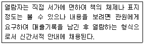
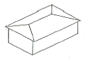
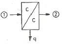

건축설비산업기사 (2007-03-04 기출문제)
1과목: 건축일반
1. 다음의 계단에 관한 설명 중 옳지 않은 것은?
- 계단을 대체하여 설치하는 경사로의 경사도는 1:8를 넘지 않도록 한다.
- 높이가 3m를 넘는 계단에는 높이 3m 이내마다 계단참을 설치하여야 한다.
- 높이가 0.8m를 넘는 계단 및 계단참의 양옆에는 난간을 설치하여야 한다.
- 초등학교의 계단인 경우에는 계단참의 너비는 1.5m이상으로 한다.
(정답률: 91%)

2. 다음의 목재의 접합에 관한 설명 중 옳지 않은 것은?
- 이음과 맞춤의 단면은 응력의 방향에 직각이 되도록 한다.
- 재료는 될 수 있는 한 적게 깎아 내어 약해지지 않도록 한다.
- 보의 경우는 전단력이 가장 적은 곳에서 이름을 하는 것이 가장 바람직하다.
- 앞축면은 정확히 가공하여 서로 밀착되어 빈틈이 없도록 한다.
(정답률: 알수없음)
3. 다음 중 조적식 구조에서 통줄눈을 피해야 하는 이유와 가장 관계가 먼 것은?
- 보강철근을 배치할 수 없다.
- 하중을 하부로 균등하게 전달할 수 없다.
- 구조적으로 취약하다.
- 균열이 발생하기 쉽다.
(정답률: 65%)
4. 철근콘크리트보에서 스터럽을 쓰는 가장 주된 이유는?
- 전단력에 의한 균열방지
- 주근의 부식 방지
- 주근의 위치 보존
- 콘크리트 부착강도 증대
(정답률: 73%)
5. 백화점 기둥간격의 결정요소와 가장 관계가 먼 것은?
- 매장 진열장의 배치와 치수
- 지하주차장의 주차방식과 주차 폭
- 에스컬레이터의 배치 및 크기
- 공기조화방식
(정답률: 65%)
6. 일반주택의 거실계획에 관한 설명 중 잘못된 것은?
- 통로로서 사용되는 평면배치는 피하도록 한다.
- 정원과 유기적으로 시각적 연결을 하도록 한다.
- 리빙 키친은 거실과 부엌을 분리한 형태로 대규모 주택에 적합하다
- 일반적으로 면적은 1인당 최소한 4~6m2 정도가 적당하다.
(정답률: 100%)
7. 다음의 거푸집에 대한 설명 중 옳지 않은 것은?
- 거푸집은 콘크리트에 직접 접하는 거푸집널과 이것을 정확한 위치로 유지하는 지지들의 총칭이다.
- 거푸집은 콘크리트부어 넣기의 작업과 응결 . 경화하는 동안 일정한 형상과 치수로 유지시키는 역할을 한다.
- 제치장콘크리트면에는 목재 거푸집널이 주로 사용되며, 메탈 폼은 사용하지 않는다.
- 벽거푸짚은 대개 기초 또는 바닥보 위에 지지된다.
(정답률: 70%)
8. 건축물의 주요 구성 부분 중 실의 상부를 덮은 구조 부분으로 평면, 경사면, 곡면 등이 있고, 온도 조절 역할을 하는 동시에 장식적인 효과도 지니는 것은?
- 벽
- 바닥
- 보
- 천장
(정답률: 알수없음)
9. 학교의 복도 및 계단 계획에 대한 설명 중 옳지 않은 것은?
- 복도는 단순한 통로의 기능 뿐 아니라 쉬는 시간에도 적극 활용되는 공간이 되어야 한다.
- 계단은 각층의 학생이 균일하게 이용할 수 있는 곳에 배치한다.
- 복도는 전시공간으로서의 이용을 고려하여 폭을 1.2m정도로 한다.
- 복도는 알코브를 형성하여 일자형 복도에서 오는 지루함을 피하는 것이 좋다.
(정답률: 64%)
10. 울거미를 짜고 양면에 합판을 교착한 거사으로 취클림 변형이 적은 것이 특징인 복재문은?
- 양판문
- 합판문
- 플러쉬문
- 완자문
(정답률: 알수없음)
11. 다음의 철근콘크리트 압축부재에 대한 설명 중 옳지 않은 것은?
- 압축 부재의 축방향 주철근의 최소 개수는 직사각형 띠철근 내부의 철근의 경우 4개이다.
- 압축 부재의 축방향 주철근의 최소 개수는 나선철근으로 둘러싸인 철근의 경우 6개이다.
- 띠철근 압축부재 단면의 최소 치수는 400mm이고, 그 단면적은 20,000mm2이상이어야 한다.
- 나선철근 압축부재 단면의 심부 지름은 200mm이상이어야 한다.
(정답률: 알수없음)
12. 다음 중 철골구조의 용접 결함에 속하지 않는 것은?
- 언더컷(under out)
- 오버랩(over lap)
- 클리어런스(clearance)
- 위핑 홀(weeping hole)
(정답률: 알수없음)
13. 기초의 설치시 유의사항에 대한 설명으로 옳지 않은 것은?
- 지하실은 침하의 방지를 위해 가급적 건물 일부에만 설치한다.
- 지중보를 충분히 크게하여 강성을 높여 부동침하를 방지한다.
- 다른 형태의 기초나 말뚝은 동일건물에 혼용하지 않도록 한다.
- 기초판(footing)은 그 지방의 동결선 이하에 설치한다.
(정답률: 알수없음)
14. 다음과 같은 특징을 갖는 도서관의 출납시스템은?

- 폐가식
- 안전개가식
- 반개가식
- 자유개가식
(정답률: 73%)
15. 다음 그림과 같은 지붕의 명칭은?

- 박공지붕
- 모임지붕
- 합각지붕
- 방형지붕
(정답률: 75%)
16. 다음 중 아파트의 인동간격 결정요소와 가장 거리가 먼 것은?
- 일조
- 통풍
- 프라이버시
- 단위세대의 면적
(정답률: 69%)
17. 다음 중 초등학교 저학년에 가장 적합한 학교운영방식은?
- 달톤형
- 플래툰형
- 종합교실형
- 교과교실험
(정답률: 알수없음)
18. 리조트 호텔에 대한 설명 중 틀린 것은?
- 건축의 형식은 주변조건에 따라 자유롭게 이루어진다.
- 일반적으로 객실의 크기는 도시의 커어셜 호텔에 비하여 크다.
- 주로 상업상, 사무상의 영행자를 대상으로 하며, 교통이 편리한 곳에 위치한다.
- 일반저가으로 운동시설과 레크리에이션 시설을 갖추고 있다.
(정답률: 알수없음)
19. 중복도형 아파트에 대한 설명으로 옳지 않은 것은?
- 채광 및 통풍 조건이 양호하다.
- 대지에 대해서 건물이용도가 높다.
- 프라이버시의 확보가 용이하지 않다.
- 독신자 아파트에 암이 이용된다.
(정답률: 80%)
20. 사무소 건축으로 엘리베이터 배치에 관한 설명으로 옳지 않은 것은?
- 주요출입구, 홀에 직접 면해서 배치한다.
- 동선의 집중방지를 위하여 분산 배치한다.
- 각층의 위치는 되도록 도선이 짧고 간단하게 한다.
- 외래 출입자에게 알기 쉬운 위치에 계획한다.
(정답률: 84%)
2과목: 위생설비
21. 다음 급수방식에 대한 설명 중 옳은 것은?
- 고가수조 방식은 위생성 및 유지 . 관리 측면에서 가장 바람직한 방식이다.
- 압력수조 방식은 급수 공급 압력이 일정하고 정전시에도 사용할 수 있다.
- 수도직결방식은 지역에 관계없이 항상 일정한 수압을 갖는다.
- 수도직결방식은 정전으로 인한 단수의 염려가 없으나 고층으로의 급수가 어렵다.
(정답률: 54%)
22. 급탕 인원수 150명인 아파트의 1일장 최대 예상 급탕량은? (단, 1일 1인당 급탕량은 140L/c/d이다.)
- 17800 L/d
- 21000 L/d
- 24000 L/d
- 16800 L/d
(정답률: 60%)
23. 다음의 통기배관에 대한 설명 중 옳지 않은 것은?
- 바닥 아래의 통기관은 가능한 금지해야 한다.
- 통기수직관과 우수수직관은 겸용해서는 안 된다.
- 싱크대를 연합으로 2개 설치시 이중 트랩을 설치한다.
- 각개통기방식에서는 반드시 통기수직관을 설치한다.
(정답률: 알수없음)
24. 먹는 물의 수질기준에서 건강상 유해영향 유기물질에 관한 기준의 대상에 포함되지 않는 것은?
- 페놀
- 대장균
- 벤젠
- 톨루엔
(정답률: 75%)
25. 최대 방수구역에 설치된 스프링클러헤드의 개수가 30개일 경우, 개방형스프링클러헤드를 사용하는 스프링클러설비의 수원의 양은?
- 최소 16m3 이상
- 최소 32m3 이상
- 최소 40m3 이상
- 최소 48m3 이상
(정답률: 알수없음)
26. 기구급수 부하단위 산정에 기준이 되는 기구는?
- 세면기
- 소변기
- 대변기
- 욕조
(정답률: 알수없음)
27. 급탕 서라베에서 사용 기구수에 의해 저탕조의 용량을 구할 때 기준이 되는 것은?
- 급수탱크 용량
- 시간, 최대 예상 급탕량
- 보일러 용량
- 순환펌프 용량
(정답률: 92%)
28. 액화천연가스에 관한 것으로 옳지 않는 것은?
- 천연가스를 -162℃까지 냉각 액화한 것을 말한다.
- 천연가스의 주성분은 메탄이다.
- 공기보다 가벼워 안정성이 높다.
- 작은 용기에 담아 간단히 사용할 수 있다.
(정답률: 알수없음)
29. 각종 통기관의 고나경에 대한 설명 중 옳은 것은?
- 각개통기관의 관경은 그것이 접속되는 배수관 관경의 1/2이상으로 한다.
- 신정통기관의 관경은 배수수직관 관경보다 작게 하여야 한다.
- 배수수평지관의 도피통기관의 관경은 거것을 접속하는 배수수평지 관의 관경보다 작게 해서는 안 된다.
- 회로통기관의 관경은 배수수평지관과 통기수직관 중 작은쪽 관경 보다 작게 해서는 안 된다.
(정답률: 알수없음)
30. 다음 중 대변기의 세정방시거에 따른 분류에 속하지 않는 것은?
- 사이폰식
- 로탱크식
- 하이탱크식
- 플러시밸브식
(정답률: 65%)
31. 다음 중 트랩(trap)의 봉수파괴 원인이 아닌 것은?
- 자기사이폰 작용
- 증발 현상
- 마모 작용
- 모세관 현상
(정답률: 67%)
32. 다음 중 건물의 급수량 계산에 고려할 사항과 가장 관계가 먼 것은?
- 급수기구의 종류
- 급수기구의 수
- 건물의 용적률
- 사용 인원수
(정답률: 92%)
33. 다음 중 위생기구의 재질로 알맞지 않은 것은?
- 흡수성이 높을 것
- 청결 유지를 위해 표면이 매끄럽고 아름다울 것
- 인체에 유해한 물질이나 성분이 용출되진 않을 것
- 각종 현상 및 크기로 제작하기가 쉬울 것
(정답률: 75%)
34. 스톱 밸브라고도 불리우며 케이트 밸브에 비해서 손실수두가 크지만 유량조절을 수반할 경우에 사용되는 것은?
- 솔루스 밸르
- 체크 밸브
- 콕
- 글로브 밸브
(정답률: 알수없음)
35. 다음의 소화기구에 대한 설명 중 옳지 않은 것은?
- 소화기구는 바닥에서부터 1.5m이하의 곳에 비치한다.
- 자동확산소화용구라 함은 밀폐 또는 반 밀폐된 장소에 고정시켜 화재시 화염이나 열에 따라 자동으로 소화약제가 확산하여 소화하는 소화용구를 말한다.
- 전기실 및 전산실에서는 이산화탄소소화기를 사용할 수 없다.
- 소방대상물의 각 부분으로부터 1개의 수동식소화기까지의 보행거리가 소형수동식소화기의 경우에는 20m이내가 되도록 배치한다.
(정답률: 37%)
36. 다음 중 관트랩의 종류에 포함되지 않는 것은?
- P트랩
- S트랩
- U트랩
- 드럽트랩
(정답률: 알수없음)
37. 간접가열식 급탕방식에 대한 설명으로 옳지 않은 것은?
- 가열 보일러로 저압 보일러를 사용할 수 없다.
- 가열코일을 내장하는 등, 구조가 약간 복잡하다.
- 가열 보일러를 난방용 보일러와 겸용할 수 있다.
- 열효율이 직접가열식에 비해 떨어진다.
(정답률: 알수없음)
38. 배관용으로 사용되는 관의 종류 중 경질염화비닐관에 대한 일반적인 설명으로 옳지 않은 것은?
- 내산성. 내알칼리성이 있다.
- 마찰저항이 크다.
- 가공이 쉽다.
- 온도의 변화에 의해 강도가 떨어진다.
(정답률: 알수없음)
39. 급수배관에 관한 설명 중 옳은 것은?
- 배관이 벽이나 바닥을 관통할 때는 관의 부식을 방지하기 위하여 슬리브를 설치한다.
- 급수관은 수리시에 관 속의 물을 완전히 뺄 수 있도록 기울기를 주어야 하며, 일반저가으로 상향기울기로 한다.
- 배관내에 생기는 공기를 배출하기 위해서 공기실을 설치한다.
- 대귬 건물의 급수주관이나 급수지관의 관경을 결정할 때는 주로 관균등표가 이용된다.
(정답률: 10%)
40. 부패탱크 방식의 오수처리시설에서 혐기성균은 어디에서 생육하는가?
- 부패조
- 여과조
- 산화조
- 소독조
(정답률: 알수없음)
3과목: 공기조화설비
41. 다음은 복사난방의 특징을 설명한 것이다. 적당하지 않은 것은?
- 실내상하 온도차가 적고 온도분포가 균등하다.
- 신속히 난방 할 수 있다.
- 천장높이가 높은 장소에서도 난방효과가 있다.
- 인체에 대한 쾌감도가 높다.
(정답률: 50%)
42. 부하의 현열비가 크게 다른 경우 건물의 공조조닝을 아는 것으로 옳은 것은?
- 방위별조닝
- 사용시간별조닝
- 공조조건별조닝
- 부하특성별조닝
(정답률: 알수없음)
43. 2중 효용 흡수식 냉동기의 구성기기로서 적합한 것은?
- 1차 응축기와 2차 응축기
- 저온발생기와 고온발생기
- 저온증발기와 고온증발기
- 1차 흡수기와 2차 흡수기
(정답률: 알수없음)
44. 다음 댐퍼에 대한 설명 중 옳지 않은 것은?
- 평행익형 댐퍼는 닫혔을 때 공기의 누설이 많다.
- 버터플라이 댐퍼는 개폐조절에 큰 힘이 필요하다.
- 방화 댐펴의 종류는 루버형, 피붓형 등이 있다.
- 풍량조절 댐퍼의 종류에는 슬라이드형과 스윙형이 있다.
(정답률: 24%)
45. 공조방식 중 송풍량이 많아서 실내공기의 오염이 적고, 중간기외기 냉방이 가능한 방식은?
- 냉매방식
- 전수방식
- 수공기방식
- 전공기방식
(정답률: 알수없음)
46. 크린룸, 비아오크린룸의 공기여과에 사용되며 세균이나 SO2, NO2의 제거에도 효과가 좋고 0.3㎛ 입자의 제진 효율이 99.9% 이상의 성능을 가진 필터는?
- 활성탄
- HEPA 필터
- 석면
- 활석
(정답률: 알수없음)
47. 증기트랩의 설치위치로 가장 적당한 곳은?
- 펌프의 입구
- 펌프의 출구
- 방열기 입구
- 방열기 화수구
(정답률: 알수없음)
48. 증기난방설비의 구성요소를 나타낸 것 중 옳지 않은 것은?
- 리프트피팅
- 진공환수펌프
- 하드포트배관
- 팽창탱크
(정답률: 알수없음)
49. 분리형 룸쿨러는 실내기와 실외기로 구분한다. 다음 중 실내기에만 설치되어 있는 것은?
- 증발기
- 응축기
- 압축기
- 패창탱크
(정답률: 64%)
50. 전기히터를 사용하여 습공기를 가열할 경우에 대한 설명이다. 옳은 것은?
- 건구온도가 높아지고 엔탈피는 일정하다.
- 절대습도는 일정하고 상대습도가 낮아진다.
- 절대습도가 높아지고 상대습도는 일정하다.
- 습구온도와 절대습도가 낮아진다.
(정답률: 60%)
51. 일반 공기조화용으로 사용되는 흡수식 냉동기의 냉매는 무엇인가?
- LiBr
- 프레온
- 암모니아
- 물
(정답률: 58%)
52. 다음 그림과 같은 냉각장치는 G kg/h의 공기를 ①의 상태에서 ②의 상태로 냉각시킨다. 이 때 코일의 냉각열량 q는 몇 kcal/h인가? (단, ①의 상태 및 ②의 상태에서 엔탈피, 절대습도, 건구 온도는 각각 h1, h2, x1, x2, t1, t2 이다.)

- q = G(h1-h2)
- q = 1.2G(t1-t2)
- q = 0.24G(h1-h2)
- q = 597.5G(x1-x2)
(정답률: 알수없음)
53. 증기트랩 중 기계식트랩의 종류로서 맞게 조합한 것은?
- 버킷 틀랩, 플로트 트랩
- 버킷 트랩, 밸로즈 트랩
- 아이메탈 트랩, 열동식 트랩
- 플로트 트랩, 열동식 트랩
(정답률: 알수없음)
54. 다음 중 공기조화용 덕트이 판 재료로 가장 많이 사용되는 것은?
- 일반구조용 압연강재
- 아연도금 철판
- 동판
- 스테인레스 강판
(정답률: 50%)
55. 제습 방식 중 동력소비가 커서 일반적으로 잘 사용되지 않는 방식?
- 냉각 감습법
- 압축 감습법
- 흡수식 감습법
- 흡착식 감습법
(정답률: 알수없음)
56. 흡수식 냉동기의 특징 중 틀린 것은?
- 운전시 소음, 진동이 없다.
- 전력 수요량이 적고, 수전설비가 적게 든다.
- 압축시거에 비해 설치면적, 높이 중량이 적다.
- 부하가 규정 용량을 초과해도 사고발생이 없다.
(정답률: 알수없음)
57. 펌프의 회전수가 1,200rpm일때 토출량은 1.5m3 /min, 양정은 45m, 소요동력이 12kW이었다. 토출량을 2m/min로 높이기 위하여 필요한 회전수(N2)와 축동력 (L2)은 얼마인가?
- N2 = 1,600rpm, L2 = 21.3kW
- N2 = 1,600rpm, L2 = 28.4kW
- N2 = 2,133rpm, L2 = 21.3kW
- N2 = 2,133rpm, L2 = 28.34W
(정답률: 59%)
58. 일반적인 주거용 건물의 경우 실내 환경 오염척도의 기준으로 가장 많이 사용되는 것은?
- CO2 함유량
- CO 함유량
- SO2 함유량
- 분지량
(정답률: 알수없음)
59. 냉방부하 중 현열부하와 잠열부하가 복합된 것은?
- 태양 복사열
- 조명에서의 발생열
- 인체에서의 발생열
- 간벽, 바닥, 천장을 통과하는 전도열
(정답률: 알수없음)
60. 다음 건축 공간 중에서 겨울철에 실내온도조건을 가장 낮게 설정할 수 있는 곳은?
- 사무실
- 병실
- 침실
- 실내체육실
(정답률: 79%)
4과목: 건축설비관계법규
61. 축법상 건축물의 배관설비 기준에 적합하지 않는 것은?
- 배관설비를 콘크리트에 묻는 경우 부식의 우려가 있는 재료는 부식 방지조치를 할 것.
- 건축물의 주요부분을 관통하여 배관하는 경우에는 건축물의 구조내력에 지장이 없도록 할 것.
- 압력탱크 및 급탕설비에는 폭발 등의 위험을 막을 수 있는 시설물을 설치할 것.
- 우수관과 오수관은 부리하지 않고 배관할 것.
(정답률: 알수없음)
62. 건축법상 증축과 관계가 없는 것은?
- 건축면적
- 구조
- 층수
- 높이
(정답률: 알수없음)
63. 건축관련법상 공동주택과 오피스텔의 난방설비를 개별난방방식으로 하는 경우 규정되어 잇는 것 중 거리가 먼 것은?
- 보일러실의 설치장소에 대한 기준
- 보일러실의 환기에 대한 기준
- 기름보일러의 기름저장소 설치장소에 대한 기준
- 공동주택의 난방구획에 대한 설치기준
(정답률: 알수없음)
64. 다음 건축물 중 건축법상 배연설비를 하지 않아도 되는 건축물은?
- 6층의 영화관
- 6층의 호텔
- 7층의 병원
- 7층의 대학 강의동
(정답률: 알수없음)
65. 5층 이상의 건축물에 피난의 용도에 쓸 수 있는 광장을 옥상에 설치하여야 하는 건축물의 용도는?
- 문화 및 집회시설 중 공연장
- 의료시설 중 병원
- 위락시설 중 무도학원
- 숙박시설 중 호텔
(정답률: 20%)
66. 채광을 위하여 단독주택의 거실에 설치하는 창문 등의 면적은 그 거실의 바닥면적의 최소 얼마 이상이어야 하는가?
- 1/5
- 1/10
- 1/20
- 1/50
(정답률: 알수없음)
67. 다음 중 건축법령상 내화구조로 인정될 수 없는 것은?
- 골구를 철골조로 한 벽으로 양면을 두께 5cm인 석재로 덮은 것
- 기둥의 작은 지름이 25cm인 철근콘크리트조
- 벽돌로서 두께가 19cm인 벽
- 철근콘크리트조 벽의 경우 두께가 8cm인 것
(정답률: 75%)
68. 건축법상 승용승강기를 설치하여야 하는 대상건축물의 원칙적인 기준은?
- 건축물의 용도
- 층수와 연면적
- 거실바닥면적의 합계
- 연면적
(정답률: 40%)
69. 소방시설설치유지 및 안전관리에 관한 법률상 소방시설 등의 종류에 해당하지 않는 것은?
- 소화설비
- 피난설비
- 경보설비
- 방화설비
(정답률: 알수없음)
70. 건축법상 건축물의 용도분류에서 잘못된 것은?
- 다가구주택 - 공동주택
- 무도장 - 위락시설
- 휴양콘도미니엄 - 숙박시설
- 접골원 - 제1종인 생활시설
(정답률: 47%)
71. 주거용 건축물의 급수관 지름의 최소 기준으로 맞는 것은?
- 2세대의 경우 15mm
- 18세대의 경우 75mm
- 가구 또는 세대의 구분이 불분명한 건축물로 주거에 쓰이는 바닥 면적의 합계가 85m2일 경우 15mm
- 가구 또는 세대의 구분이 불분명한 건축물로 주거에 쓰이는 바닥 면적의 합계가 600m2일 경우 40mm
(정답률: 알수없음)
72. 소방시설 중 피난설비가 아닌 것은?
- 비상방송설비
- 비상조명등
- 유도표시
- 인공소생기
(정답률: 64%)
73. 자동화재탐지설비를 설치하여야 할 특정소방대상물의 기준으로 옳지 않은 것은?
- 의료시설 - 연면적이 600m2이상
- 아파트 - 연면적이 1,000m2이상
- 근린생활시설 - 연면적이 500m2이상
- 위락시설 - 연면적이 600m2이상
(정답률: 40%)
74. 건축설계시 적용하여야 할 에너지 절약 계획으로 부적합한 것은?
- 남향배치를 한다.
- 외벽 부위를 외단열로 시공한다.
- 거실부위의 창호는 기밀성 창호를 사용한다.
- 외벽체의 관류열저항을 가급적 작게 한다.
(정답률: 73%)
75. 물 분무 등 소화설비를 설치하여야 하는 특정소방대상물의 기준으로 옳지 않은 것은?
- 항공기격납고
- 주차용 건축물로서 연면적 800제곱미터 이상인 것.
- 주창장법 제2조제1호의 2의 규정에 의한 기계식주차장으로서 10대 이상의 차량을 주차할 수 있는 것.
- 건축물내부에 설치된 차고 또는 주차장으로서 차고 또는 주차의 용도로 사용되는 부분의 바닥면적의 합계가 200제곱미터 이상인 것.
(정답률: 알수없음)
76. 거실에 배연설비를 설치시 건축물에 방화구획이 설치된 경우에는 그 구획마다 1개소 이상의 배연창을 설치하되 배연창의 상변과 천장 또는 반자로부터 수직거리가 얼마 이내이어야 하는가?
- 0.5 m
- 0.6 m
- 0.9 m
- 1.2 m
(정답률: 42%)
77. 소화활동설비로서 제연설비를 설치하여야 할 소방 대상물은?
- 무대부의 바닥면적이 300m2인 문화집회 및 운동시설
- 근린생할 위락시설로서 지하층의 바닥면적이 500m2인 것
- 무창층의 바닥면적이 800m2인 공항시설의 대합실
- 지하가(터널을 제외한다)로서 연면적이 800m2인 것
(정답률: 알수없음)
78. 에스컬레이터는 건축물의 출입구에 설치하는 회전문으로부터 최소 얼마이상 떨어져 설치해야 하는가?
- 2m
- 4m
- 6m
- 8m
(정답률: 82%)
79. 막다른 도로의 길이가 10m일 때 도로의 소소너비는?
- 2m
- 3m
- 4m
- 6m
(정답률: 알수없음)
80. 다음 중 소화활동설비에 해당되지 않는 것은?
- 비상콘센트설비
- 스프링클러설비
- 무선통신보조설비
- 연소방지설비
(정답률: 64%)
높이가 0.8m를 넘는 계단 및 계단참의 양옆에는 난간을 설치하여야 하는 이유는 안전을 위해서이다. 높이가 0.8m를 넘는 계단이나 계단참에서는 사람이 넘어질 경우 다칠 수 있는 위험이 있기 때문에, 난간을 설치하여 사람이 지탱할 수 있도록 해야 한다.